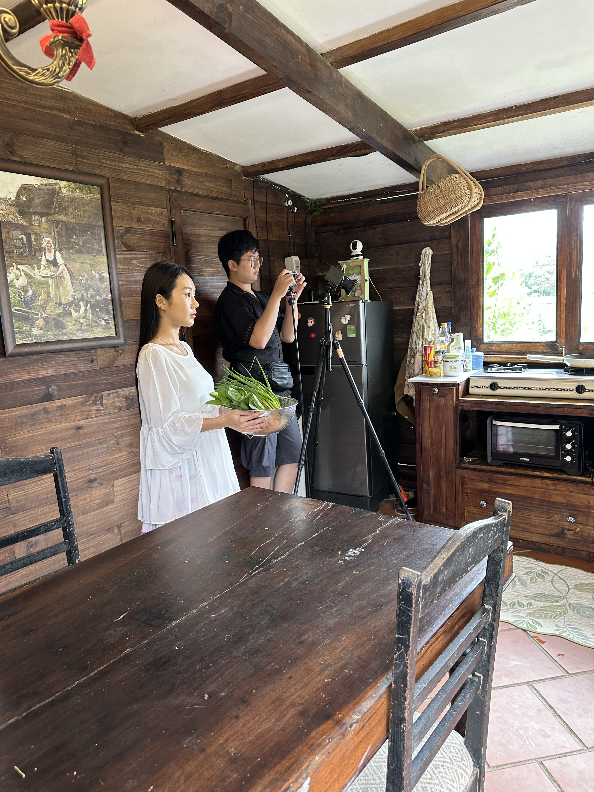
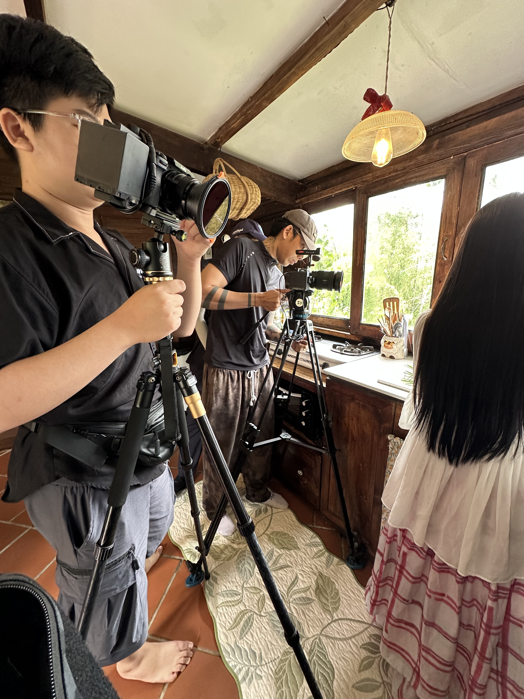
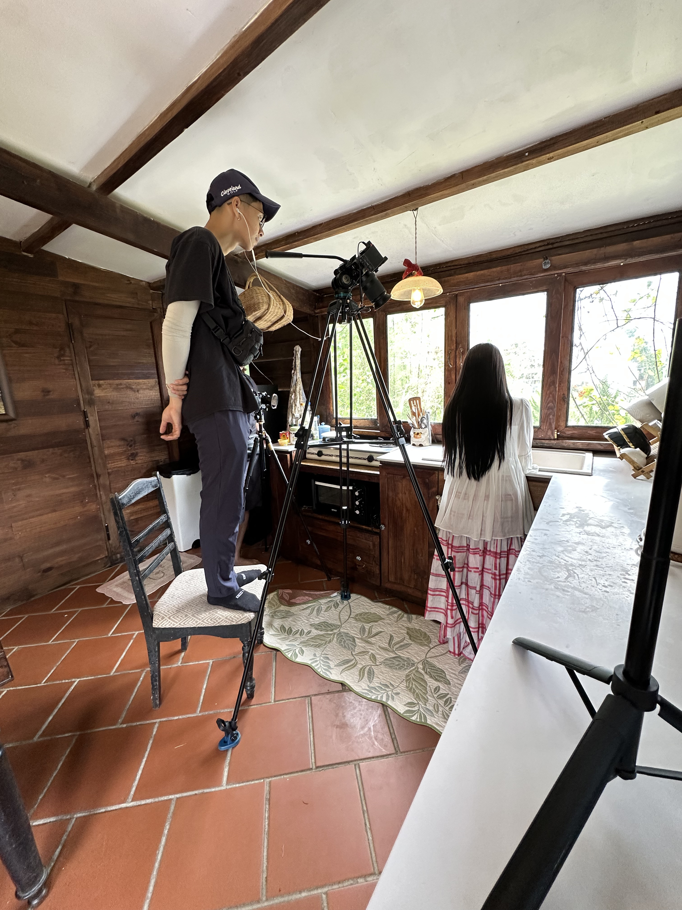
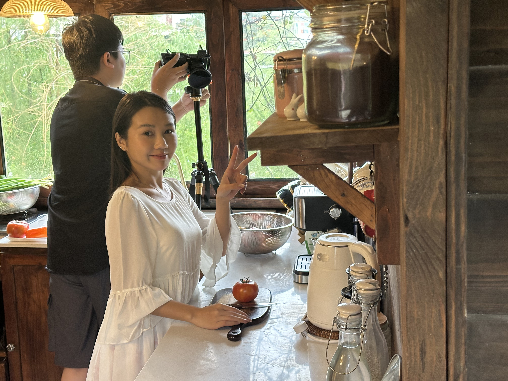
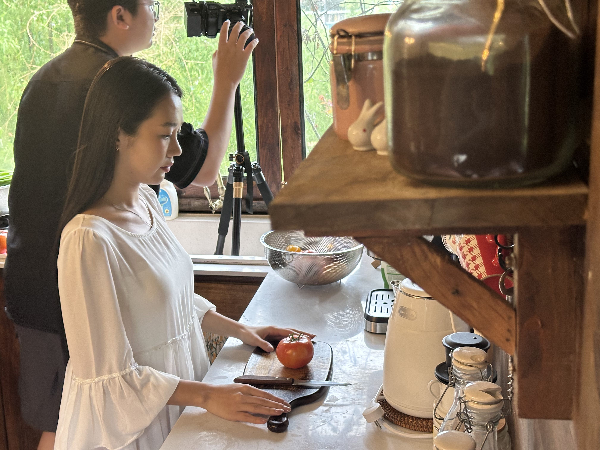
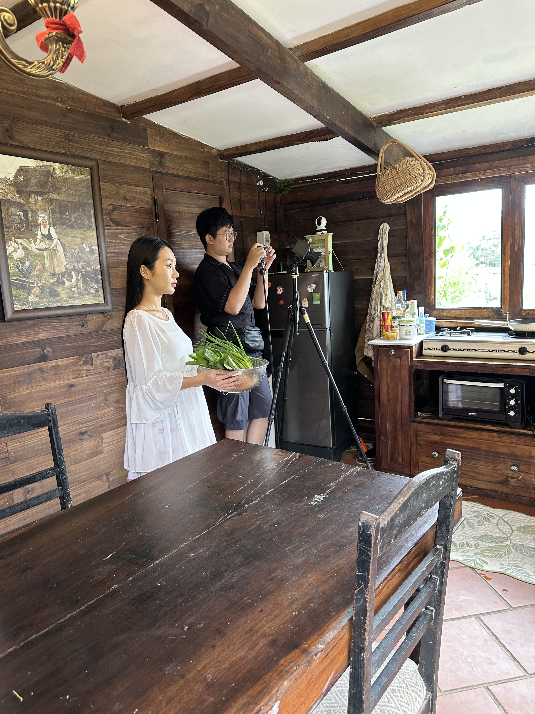
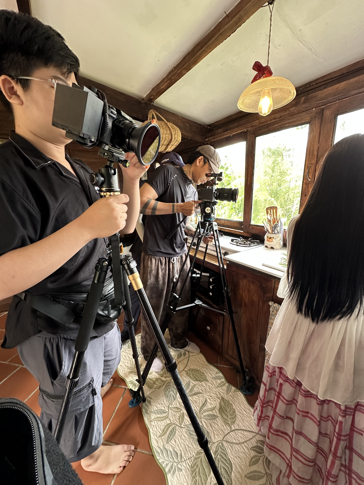
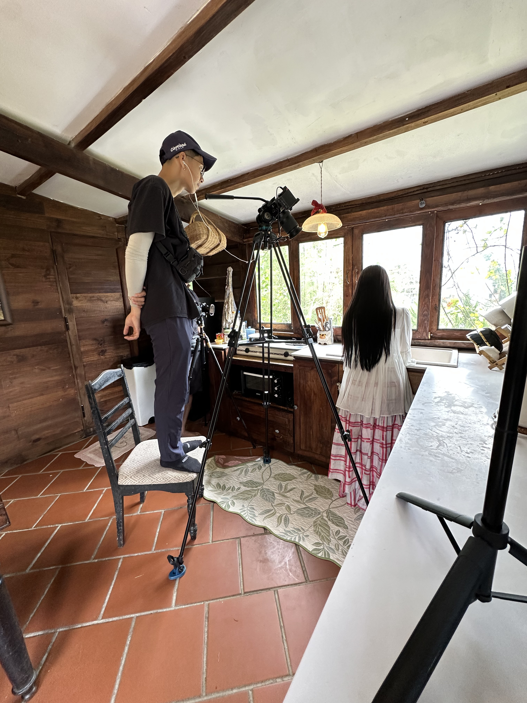
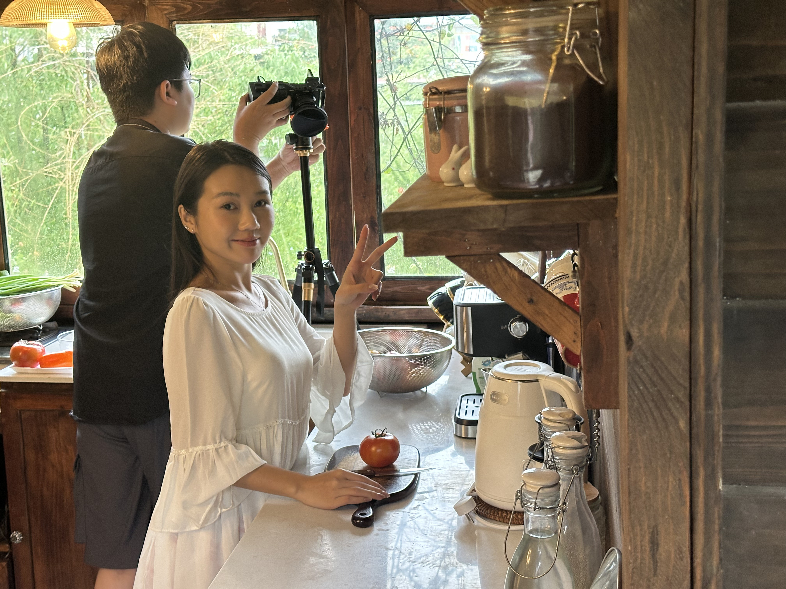
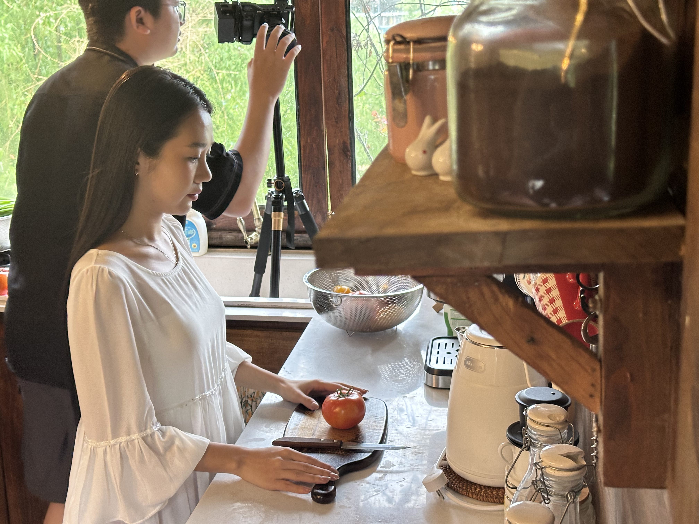

This project was filmed on the Sony A6700 using 18–135mm, 24–70mm, and 11mm lenses, paired with an ND filter to control exposure under natural sunlight.
Set at a vintage-style homestay in Da Lat surrounded by a lush garden, the film captures the daily life of a young woman — tending to her plants, gardening, cooking, and reading by the window. The production relied entirely on natural light, using its soft, golden glow to bring out the calm and nostalgic beauty of the scene. Each lens played a unique role: the 11mm captured the airy charm of the garden, the 18–135mm offered versatile framing for movement and emotion, and the 24–70mm brought intimate focus to quiet, personal moments. The result is a warm, organic visual tone that reflects both the vintage atmosphere and the peaceful rhythm of slow living in Da Lat.
 









Filmed on the Sony A6700 with 18–135mm, 24–70mm, and 11mm lenses using an ND filter, this project captures a girl’s peaceful daily life — gardening, cooking, and reading — at a vintage homestay in Da Lat. Shot entirely under natural light, the visuals reflect the warmth, calmness, and nostalgic beauty of slow living.